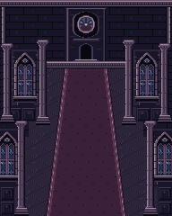
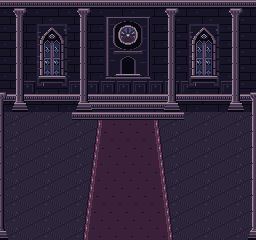
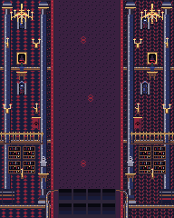
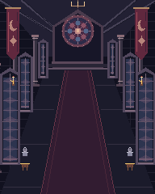

SCARLET MOON NEVER SETS · V4 PROOF
Mansion architectural kit
Ten RoboPixel candidates. Two native compositions. Review only — not approved or integrated.
Gameplay · 192×240 · corridor / quiet centre
Story · 256×240 · rear elevation / actor stage
Clean backgrounds. Both views use the same exact assets with separate placement lists.
Reusable kit
Columns use cap, repeated shaft and base slices. Carpet uses one field plus a mirrored border wedge. No asset resampling or scene-level shape drawing.
Direction comparison
Frozen V3 · baseline
Astra checkpoint · composition reference
This proof · canonical pixel kit
Worker assessment: the workflow works and the visual direction is promising. Depth remains approximate; floor convergence, near/far variants and the rose identity need further Mansion-only refinement. Static witnesses are not live combat QA.
README · Asset inventory · Workflow · Evaluation · Verification